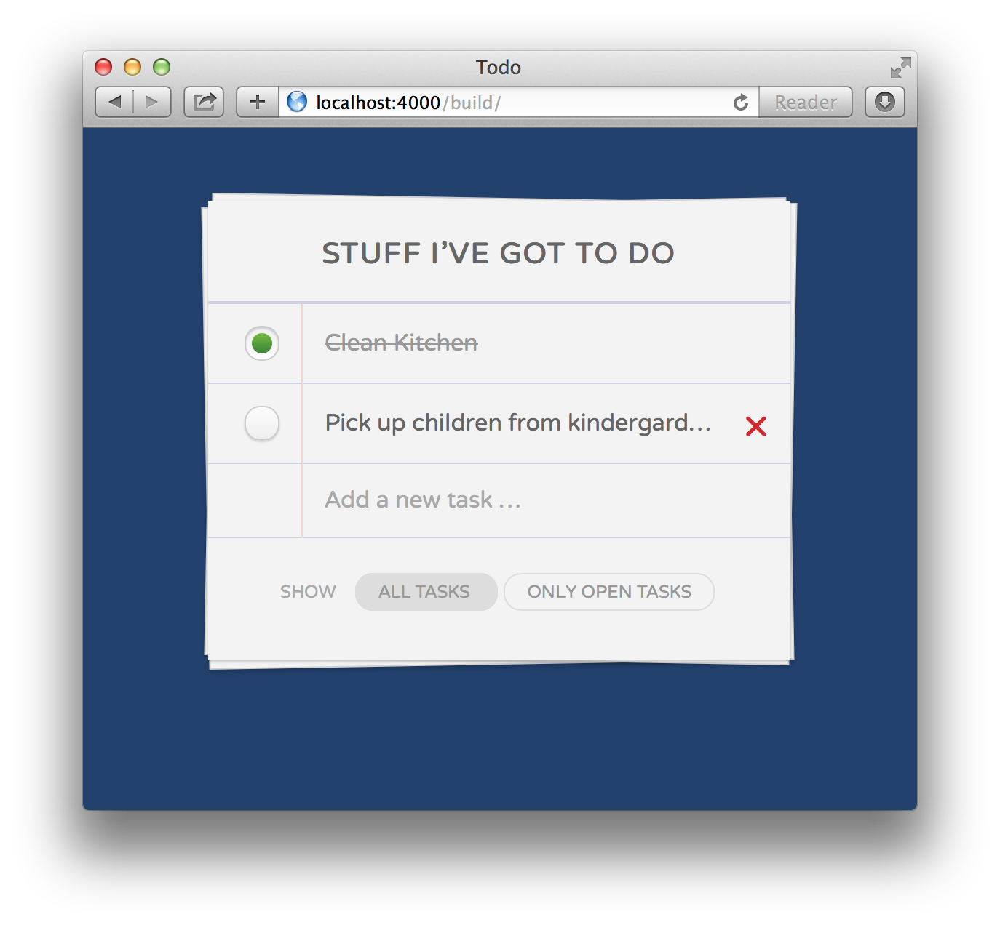

A test for aspiring Siili front-end developers
We would like to use this test to see how you think, work and solve problems.
The task
YATDL — Yet Another ToDo List! We would like you to build this small ToDo application. It allows you to add and remove tasks as well as to check them off and filter them. There’s not a single right solution to this challenge and the task consists of a few different parts in various disciplines. The test is usually followed by an interview during which we’ll ask you some questions related to this task.
See it in action:
You can solve this test in your own time, at your own pace and with as much help from Google and Stackoverflow as you like. Please try to keep track of how much time it took you to complete the app, though — we’ll ask you about that during the interview (and for obvious reasons it makes sense to be honest about it, of course).
If you get stuck or feel like something takes too much of your time — don’t worry! Try to finish the app another way and make sure to bring any problems you might have had up in the interview. Creative approaches and work–arounds are always welcome.
Mark-up:
- Should be valid, semantically correct HTML5 mark-up
- Feel free to use meta languages like Haml, Slim or Jade but if you do, please provide both source and compiled version of your code
- Keep accessibility in mind
- Follow best practices and web standards
Styles:
- Our app will target the latest version of Chrome so go nuts and use any CSS3 trickery you can think of
- Feel free to use meta languages like Sass, Stylus or Less but if you do, please provide both source and compiled version of your code
- Frameworks can be helpful but for this exercise we’d like to see your code only, so please leave Twitter Bootstrap, Foundation etc. at home. Feel free to include a reset stylesheet like
normalize.css, though - Our implementation doesn’t require any images, all effects are achievable with CSS if you like to work this way
- The font used in our demo is called
Varela Roundand is available via Google fonts.
JavaScript:
- Use jQuery at will but leave other frameworks like Angular or Ember out this time
- Feel free to write your app in CoffeeScript but if you do, please provide both source and compiled version of your code
- Follow best practices and document your code if you find it necessary
- Tests are not required this time (but feel free to include them if BDD/TDD is your thing)
- Our app should play well with others — however you structure your JS code, please ensure that you’ve implemented a way to programmatically add a new task and that the following API is publicly available:
Task.findAll() // returns all tasks
Task.findOpen() // returns only the open tasks
The interview
We will ask you a few questions regarding this test — here’s a few things we might ask you:
- Did you detect any usability flaws in our design and if so — what kind?
- What would you do differently in regards to UI/UX?
- If you could implement one additional feature, which one would that be?
- How would you ensure accessibility of our app?